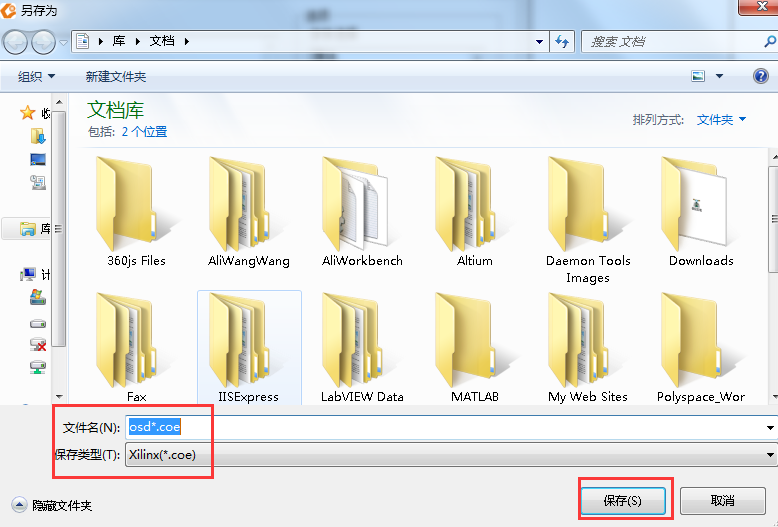
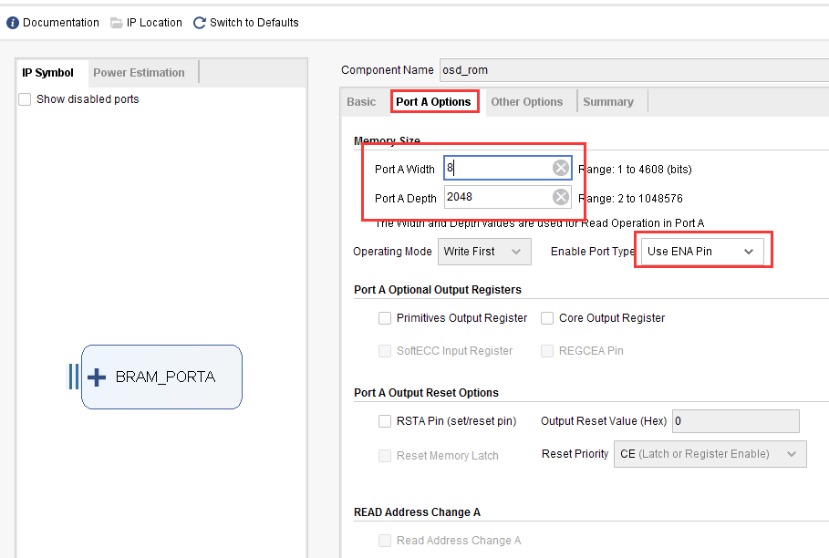
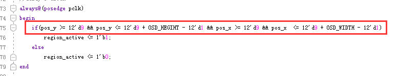

《第十五章》HDMI 字符显示实验¶
实验Vivado工程为“hdmi_char”。
在HDMI输出实验中讲解了HDMI显示原理和显示方式,本实验介绍如何使用FPGA实现字符显示,通过这个实验更加深入的了解HDMI的显示方式。
15.1实验原理¶
实验通过字符转换工具将字符转换为16进制coe文件存放到单端口的ROM IP 核中,再从ROM 中把转换后的数据读取出来显示到HDMI上。
15.2程序设计¶
字符显示例程是在HDMI显示的基础上增加了一个osd_display的模块,“osd_display”模块是用来读取存储在Rom ip核里转换后的字符信息,并在指定区域显示。程序框图如下图所示:
在“timing_gen_xy”模块是根据HDMI时序标准定义了“x_cnt”和“y_cnt”两个计数器并由这两个计数器产生了HDMI显示的“x”坐标和“y”坐标。程序中用“vs_edge”和“de_falling”分别表示场同步开始信号和数据有效结束信号。其原理如下图所示:

信号名称 |
方向 |
说明 |
|---|---|---|
rst_n |
in |
异步复位输入,低复位 |
clk |
in |
外部时钟输入 |
i_hs |
in |
行同步信号 |
i_vs |
in |
场同步信号 |
i_de |
in |
数据有效信号 |
i_data |
in |
color_bar数据 |
o_hs |
out |
输出行同步信号 |
o_vs |
out |
输出场同步信号 |
o_de |
out |
输出数据有效信号 |
o_data |
out |
输出数据 |
x |
out |
生成X坐标 |
y |
out |
生成Y坐标 |
timing_gen_xy模块端口
2) 下面介绍如何存储文字信息的ROM IP,首先需要生成能够被XILINX FPGA识别的.coe文件。 首先在工程文件夹下找到“FPGA字模提取”工具。
双击.exe文件打开工具
在提取工具的“字符输入”框中输入需要显示的字符,字体和字符高度可以自定义选择。设置完成后点击“转换”按钮,在界面左下角可以看到转换后的字符点阵大小,点阵的宽和高在程序中是需要用到
点阵的宽和高这里位144x32,需要跟osd_display程序中定义的一致:

点击“保存”按钮,将文件保存到本例程源文件目录下,需要注意的是在保存类型下应该选择Xilinx(.coe),点击“保存”按钮。
找到生成的.coe文件打开后可以看到如下:

调用单端口Rom IP核的过程在前面ROM的使用中已经介绍过,设置为Single Port ROM

在PortA Options栏中设置如下:
按如下图添加osd.coe文件(找到前面生成的coe文件),完成后点击“OK”按钮:

osd_display模块包含timing_gen_xy 模块和osd_rom模块。osd_rom里存储的字符数据,如果数据为1,OSD的区域显示ROM中的前景红色(显示ALINX芯驿),如果数据是0,OSD的区域显示数据为背景色(彩条)。
设置区域有效信号,也就是字符显示在此区域中,起始坐标设置成(9,9),区域大小可以根据字符生成工具设置的区域设置。

在ROM的读地址部分可能很多人不理解,为什么是[15:3],也就是八个时钟周期才读出一个数据,这是因为字符的一个点只表示1bit,而ROM的存储数据宽度是8位,因此需要八个周期取出一个数据,并比较每个bit位的值,将字符一个点转换成图像上的一个像素。

信号名称 |
方向 |
说明 |
|---|---|---|
rst_n |
in |
异步复位输入,低复位 |
pclk |
in |
外部时钟输入 |
i_hs |
in |
行同步信号 |
i_vs |
in |
场同步信号 |
i_de |
in |
数据有效信号 |
i_data |
in |
color_bar数据 |
o_hs |
out |
输出行同步信号 |
o_vs |
out |
输出场同步信号 |
o_de |
out |
输出数据有效信号 |
o_data |
out |
输出数据 |
osd_display模块端口
15.3实验现象¶
连接好开发板和显示器,连接方式参考《HDMI输出实验》教程,需要注意,开发板的各个连接器不要带电热插拔,下载好实验程序,可以看到显示器显示以彩条为背景的字符。开发板作为HDMI输出设备,只能通过HDMI显示设备来显示,不要试图通过笔记本电脑的HDMI接口来显示,因为笔记本也是输出设备。
默认字符显示的位置在坐标为(9,9),另外用户可以修改下面的pos_y和pos_x的判断条件将字符显示在显示屏的任意位置:

ZYNQ MPSoC开发平台 FPGA教程 - Alinx官方网站